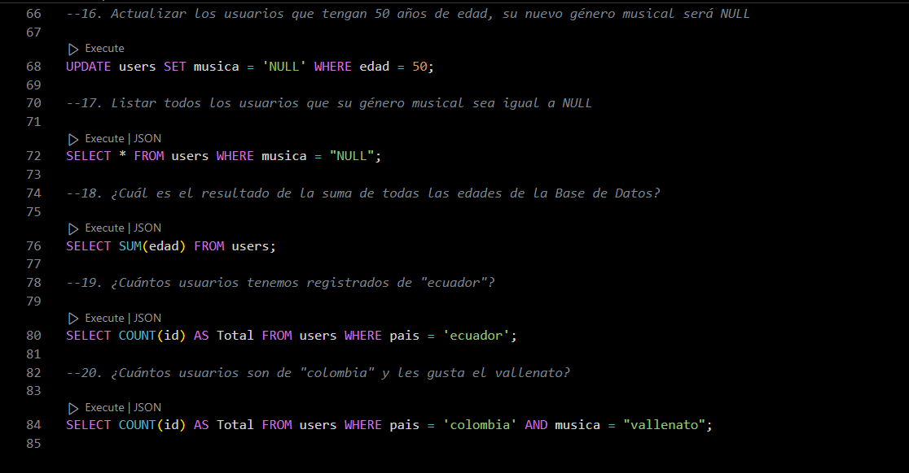

Resolver los siguientes ejercicios:

- 
NOTA: He trabajado las consultas sobre el mismo archivo sb pruebas.sql, el cual quedó almacenado en el Repositorio del siguiente enlace: https://github.com/MiguelTabares/mySqlExercisesDay2/tree/master Sin embargo, al querer visualizarlo GitHub me arroja el siguiente mensaje: "Sorry about that, but we can’t show files that are this big right now." "Lo sentimos, pero no podemos mostrar archivos de este tamaño en este momento".
Sin embargo, al dar click sobre el enlace View raw se puede visualizar el archivo en toda su extensión. El cual se visualizará de la siguiente manera: